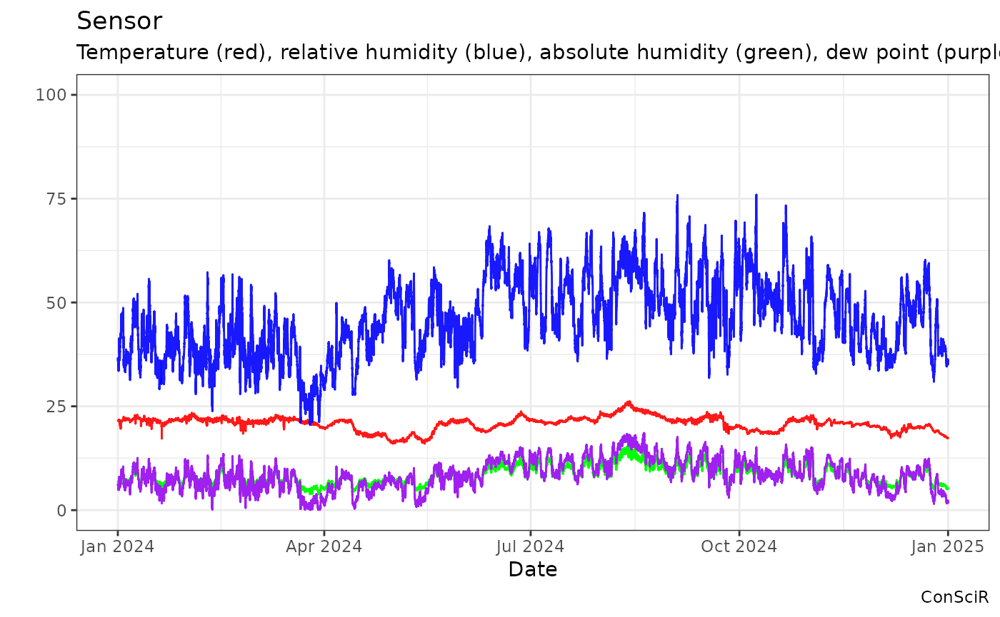

ConSciR
2024-11-01
ConSciR.RmdThe ConSciR Github page: ConSciR Github
Introduction
ConSciR is an R package specifically designed to assist conservators and scientists by providing a toolkit for performing essential calculations and streamlining common tasks in conservation.
Install and load
install.packages("devtools")
devtools::install_github("BhavShah01/ConSciR")Or
install.packages("pak")
pak::pak("BhavShah01/ConSciR")Tidy data
To ensure optimal functionality of ConSciR functions, it is crucial to maintain your data in a tidy and consistently formatted structure. This allows the code to easily locate and process your variables. Please note the specific naming conventions for the columns as they are essential for the package to work correctly. The following formats are recommended:
Temperature and Relative Humidity Data
#> Site Sensor Date Temp RH
#> 1 London Gallery 2023-01-01 00:00:00 20.5 45
#> 2 London Gallery 2023-01-01 01:00:00 21.0 47
#> 3 York Room 2023-01-01 00:00:00 19.8 50
#> 4 York Room 2023-01-01 02:00:00 20.2 49Light and UV Data
#> Site Sensor Date Lux UV
#> 1 Museum Store 2023-01-01 00:00:00 45 0
#> 2 Museum Store 2023-01-01 01:00:00 56 0
#> 3 Case Shelf 2023-01-01 00:00:00 200 20
#> 4 Case Shelf 2023-01-01 02:00:00 199 49Key Points:
- Column Names: Try to use the exact column names as shown above (Site, Sensor, Date, Temp, RH, Lux, UV). These names are case-sensitive. Tools to tidy files are being developed.
- Date Format: The Date column should ideally be in a datetime format (YYYY-MM-DD HH:MM:SS). Check the behaviour of dates if this format hasn’t been used.
- Numeric Data: Ensure that Temp, RH, Lux, and UV columns contain only numeric data.
- Categorical Data: Site and Sensor are categorical variables and should be character strings.
- Tidy Structure: Each row represents a single observation, and each column represents a single variable.
- No Missing Columns: Include all relevant columns, even if some data points are missing (leave blank or use NA for missing values).
Functions available
- Calculations: dew point, absolute humidity, water vapour pressure, mixing ratio, enthalpy
- Graphs: TRH plots, psychometric chart
- Summaries: percentiles
- Analysis:
- Tidying data:
Examples
Add calculated values using mutate
# Add calculated values using mutate
head(mydata) |>
mutate(
AbsHum = calcAH(Temp, RH),
DewPoint = calcDP(Temp, RH),
MixingRatio = calcMR(Temp, RH),
Enthalpy = calcEnthalpy(Temp, RH),
IPI = calcIPI(Temp, RH),
PI = calcPI(Temp, RH)
)
#> # A tibble: 6 × 11
#> Site Sensor Date Temp RH AbsHum DewPoint MixingRatio
#> <chr> <chr> <dttm> <dbl> <dbl> <dbl> <dbl> <dbl>
#> 1 London Room 1 2024-01-01 00:00:00 21.8 36.8 7.05 6.41 5.96
#> 2 London Room 1 2024-01-01 00:15:00 21.8 36.7 7.03 6.37 5.94
#> 3 London Room 1 2024-01-01 00:29:59 21.8 36.6 7.01 6.33 5.93
#> 4 London Room 1 2024-01-01 00:44:59 21.7 36.6 6.97 6.24 5.89
#> 5 London Room 1 2024-01-01 00:59:59 21.7 36.5 6.95 6.20 5.87
#> 6 London Room 1 2024-01-01 01:14:59 21.7 36.2 6.90 6.08 5.83
#> # ℹ 3 more variables: Enthalpy <dbl>, IPI <dbl>, PI <dbl>Visualise and explore data
mydata |>
# Calculate Absolute Humidity and Dew Point
mutate(
AbsHum = calcAH(Temp, RH),
DewPoint = calcDP(Temp, RH)
) |>
# Create base plot using graph_TRH function
graph_TRH() +
# Add Absolute Humidity line
geom_line(aes(Date, AbsHum), color = "green") +
# Add Dew Point line
geom_line(aes(Date, DewPoint), color = "purple") +
# Set y-axis limits
lims(y = c(0, 100)) +
# Add labels and title
labs(
x = "Date",
y = "",
title = "Sensor",
subtitle = "Temperature (red), relative humidity (blue), absolute humidity (green), dew point (purple)",
caption = "ConSciR"
) +
# Apply black and white theme
theme_bw()